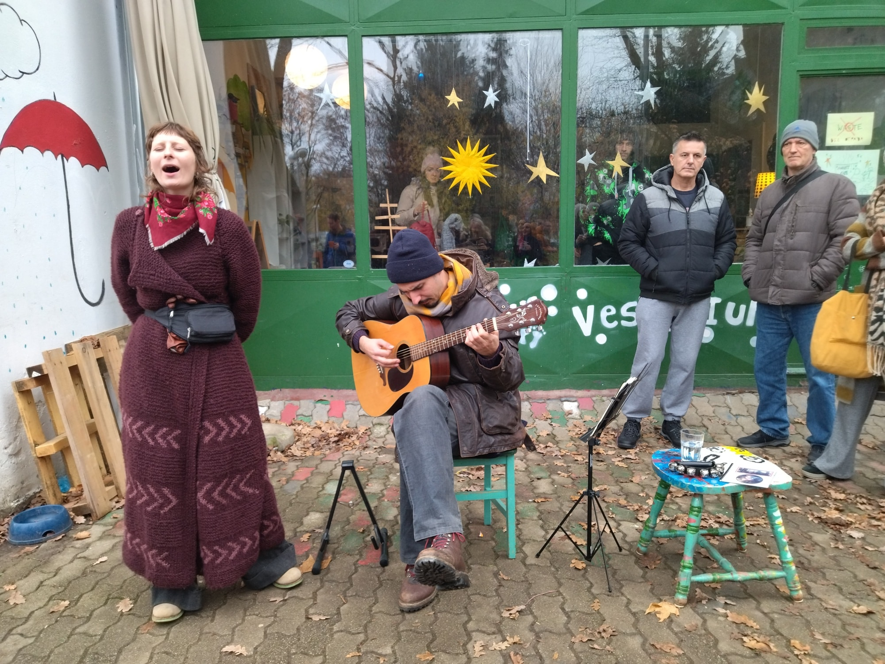

Ideja o osnivanju Udruge nastala je 2011. godine druženjem šest žena koja su na području gradske četvrti Vrbani ustanovile potrebu za uspostavljanjem multifunkcionalnog prostora, gdje bi se provodile razne inicijative građana za razvoj lokalne zajednice.Naime, osluškujući potrebe svojih susjeda i sugrađana, udruga Vestigium prepoznala je mnoge probleme s kojima se građani susreću – otuđenost među ljudima, nedostatak mjesta za okupljanje i druženje, nedostatak sadržaja za djecu i odrasle.
Područje Vrbana je karakteristična mlada četvrt u kojoj većinom žive obitelji s djecom, a usluge poput tržnice, knjižnice i doma zdravlja izostaju. Udruga Vestigium svojim djelovanjem pruža neke od ovih te još mnoge druge usluge i aktivnosti, pa je tako u svom dosadašnjem radu prepoznatljiva po promociji ekološke poljoprivrede kroz organizaciju manifestacija, grupa solidarne razmjene, izleta i povezivanja građana sa malim, lokalnim OPGovima itd.
Najvažnije je spomenuti kako su u izvođenje radionica uključeni upravo građani – oni kreiraju, predlažu i izvode sadržaj, tako da se rad udruge bazira na volonterskom doprinosu članova i ostalih zainteresiranih građana. U udruzi godišnje volontira 50 ljudi - koji prikupe preko 2000 volonterskih sati. Godišnje se u udruzi provede preko 1000 termina raznih aktivnosti (obrazovanje djece i mladih te njihovu aktivnom sudjelovanju u društvu, prevencija i borba protiv svih oblika ovisnosti, promicanje i razvoj volonterstva, socijalne usluge...)
Udruga je od 2017.g korisnica institucionalne podrške Nacionalne zaklade za razvoj civilnog društva, dio je svjetskog Tranzicijskog pokreta za održive zajednice. 2017. predstavljena je kao inspirativan primjer pod nazivom Changemakers from Croatia na konferenciji Europske mreže kulturnih centara u Hildesheimu, Njemačka. 2018. nominirana je među prvih 30 za nagradu Sozial Marie između 250 europskih socijalno inovativnih projekata.